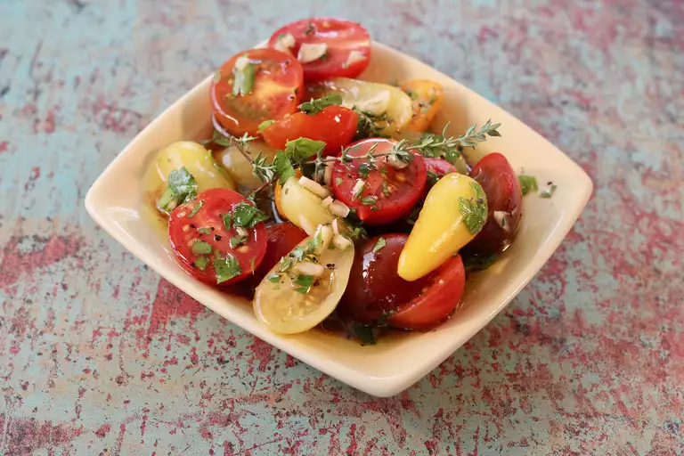

Marinated Garden Tomatoes
Description
My grandmother first served this wonderful dish with tomatoes fresh from her garden when I was a child. It's great on a hot day for a crisp side dish. Often times I use the leftover marinade when the first batch is gone and add it to the next batch. It's tangy taste is much loved, even by my non veggie-loving kids!
Ingredients:
- ¾ cup red wine vinegar
- ½ cup olive oil
- ⅓ cup chopped fresh parsley
- 1 tablespoon snipped fresh thyme
- 3 cloves garlic, minced
- 2 teaspoons coarsely ground salt
- ½ teaspoon coarsely ground black pepper
- 6 large tomatoes, sliced 1/4-inch thick
- ½ cup thinly sliced green onions
Steps
- Step 1
Combine chili-garlic sauce, hoisin sauce, shrimp stock, tomato paste, mirin, sesame oil, 2 teaspoons minced fresh ginger, 1 clove minced garlic, shallot, and cilantro in a blender or small food processor. Pulse several times to chop, then purée, 30 to 45 seconds. Set sauce aside, or refrigerate until needed.
- Step 2
Heat oil in a large skillet or wok over medium high heat. When oil is hot, add garlic and ginger slices. Cook until browned, watching closely to avoid burning, about 2 minutes. Carefully remove garlic and ginger from the oil and discard.
- Step 3
To the seasoned oil, carefully add shrimp and cook until it just begins to turn pink and curl head to tail, about 2 minutes. Turn shrimp and add prepared sauce. Cook, stirring, until shrimp are bright pink on the outside and the meat is opaque, 2 to 3 minutes. An instant-read thermometer inserted into the center should read 145 degrees F (63 degrees C).
- Step 4
Remove shrimp from the skillet and keep warm. Continue cooking and stirring sauce until thickened and reduced to about 3/4 cup.
- Step 5
Pour thickened sauce over shrimp, and toss to cover.